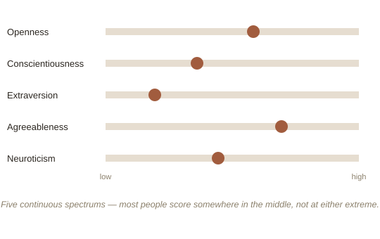

Chapter 1: Five Numbers, Not Four Boxes
Ask someone their Myers-Briggs type (MBTI) and they'll usually answer instantly and confidently — INFJ, ESTP, whatever it is. Ask a working personality researcher about MBTI, and you'll often get a wince. Despite its enormous popularity in workplaces and online quizzes, MBTI has a well-documented problem: roughly half of people who retake the same test just a few weeks later get sorted into a different type entirely, and the four-letter categories don't reliably predict real-world outcomes like job performance or relationship satisfaction. The model that's actually held up under decades of rigorous testing looks quite different — and far less catchy.
Five traits, not four boxes
The Big Five model (sometimes called OCEAN by its initials) emerged independently from multiple research teams starting in the 1980s, using a method called factor analysis (a statistical technique for finding which traits actually cluster together and vary independently, rather than assuming categories in advance) applied to huge datasets of how people describe personality in ordinary language. Instead of sorting people into fixed types, it measures five independent dimensions, each as a continuous spectrum rather than a box: Openness (curiosity and preference for novelty vs. convention), Conscientiousness (organization and self-discipline vs. spontaneity), Extraversion (energy drawn from social stimulation vs. solitude), Agreeableness (cooperation and trust vs. skepticism and directness), and Neuroticism (emotional reactivity and tendency toward negative emotion vs. stability). Nearly everyone scores somewhere in the middle range on most of these — extreme scores at either end are the exception, not the rule.

Why psychologists trust this model and not MBTI
The Big Five's advantage over MBTI isn't that it's more interesting or intuitive — it's less of both. Its advantage is that it was built empirically, from what traits actually statistically cluster in real data, rather than derived from a single theorist's framework (MBTI is based on Carl Jung's largely untested typology from the 1920s, adapted decades later by two people with no formal psychology training). The Big Five's five dimensions are far more stable on retesting, and — more importantly — they actually predict real outcomes with modest but genuine reliability: Conscientiousness correlates with job performance and longevity; Neuroticism correlates with risk of anxiety and depression; Extraversion and Agreeableness both show measurable links to relationship satisfaction and social outcomes. None of these correlations are large enough to predict any individual's life with precision, but they're real and replicated, which is the specific bar MBTI has repeatedly failed to clear.
What the model can't tell you
Daniel Nettle's book Personality is careful to frame the Big Five as descriptive, not evaluative — no trait combination is "better," and each carries genuine tradeoffs shaped partly by evolutionary pressures. High Neuroticism, for instance, correlates with more anxiety and worry, but also with faster threat detection and more careful risk assessment — costly in a calm environment, potentially valuable in a genuinely dangerous one. The model describes tendencies, not destiny — it says almost nothing about a person's specific values, life history, or the choices they make within whatever tendencies they were dealt.
Try this
Ideas for noticing or testing this in your own life.
- Try placing yourself on all five spectrums — Openness, Conscientiousness, Extraversion, Agreeableness, Neuroticism — roughly, from memory. Notice it feels less flattering and less "fun" than a four-letter type, but probably lands closer to accurate.
- Notice it next time someone says "I'm just not a [type] person": check whether a specific Big Five trait explains the same behavior more precisely — and whether it's really fixed, or just a current tendency.
Worth pulling on?
A few loose threads from this chapter — if any of these genuinely grab you, that's a good sign of where to go next.
- Big Five traits are moderately heritable — roughly 40-60% based on twin studies — but that leaves a substantial share shaped by environment and experience, and traits do shift gradually over a lifetime, most commonly toward higher conscientiousness and agreeableness with age.
- A sixth dimension, Honesty-Humility, has been proposed by some researchers (the "HEXACO" model) as a genuine addition the original Big Five may have missed — an active, ongoing debate about whether five dimensions fully cover human personality or whether a sixth is statistically justified. → Ties into Moral Psychology — personality traits and moral-foundation weightings are measured completely separately but show some interesting, still-debated overlaps.
- Big Five scores predict job performance about as well as a structured interview does, and considerably better than an unstructured one — which is part of why serious organizational psychology research has largely abandoned MBTI in favor of this model for anything with real consequences.